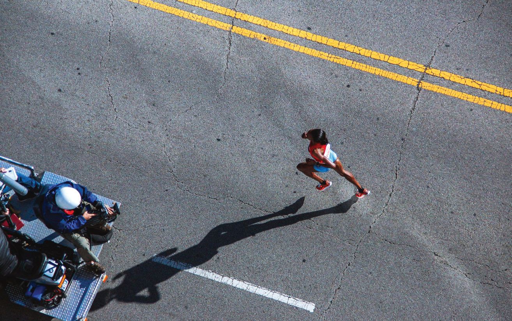

LA FORMA DE LAS SOMBRAS
Las sombras producidas por la luz del sol varían su forma a lo largo del día.
Por la mañana, las sombras son alargadas, al mediodía se acortan o desaparecen y en las últimas horas de la tarde vuelven a ser alargadas.
La luz del sol se propaga en línea recta; esto explica la deformación de la sombra.
